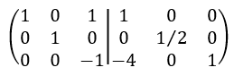

Una matriz identidad consta de una matriz cuadrada llena de ceros (0) excepto en la diagonal
principal, donde todos los elementos son unos
Matriz inversa por Gauss Jordan
El método de hallar la matriz inversa por el método de Gauss, consta de operar las
filas de un matriz cuadrada dada "A" con su matriz identidad y cambiar su
posición de derecha a izquierda y asi obtener su inversa "A¯¹",
se tiene que tomar en cuentas las operaciones elementales
Operaciones elementales
Se tienen que multiplicar las filas de la matriz con un número diferente de 0
Sumar o restar entre filas
Intercambiar el orden de las filas
Ejemplo de desarrollo
Tenemos una matriz cuadrada A de una dimensión 3x3x
La escribimos con su matriz identidad
Nos ubicamos en la fila 2 y la dividimos entre 2. Le restamos a la fila 3 el cuádruple de la fila 1

Sumamos la fila 3 a la fila 1. Después, multiplicamos la fila 3 por -1
Como ya tenemos la identidad en el lado izquierdo, Ya hallamos la inversa de la matriz A